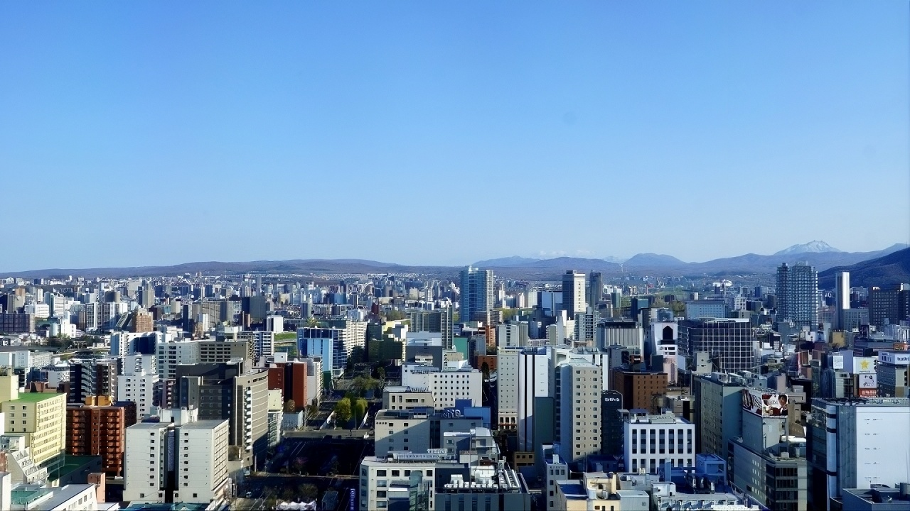

ABOUT US ／ 会社情報
運ぶことを軸に、
暮らしまるごとを支える。
株式会社completeは、2018年に札幌で創業しました。軽貨物・一般貨物の運送を中核に、住まい・通信、そして法人向けの事業支援まで——人の暮らしと仕事の「あたりまえ」を、ひとつの会社で支えるトータルライフサポートカンパニーです。
COMPLETE IN NUMBERS
数字で見るCOMPLETE
MESSAGE ／ 代表挨拶

届けるのは荷物、支えるのは暮らし。
株式会社completeは、2018年に札幌で創業し、軽貨物・一般貨物の運送を中核に歩んできました。荷物を運ぶ仕事は、社会の「あたりまえ」を支える仕事です。頼んだ品が翌日に届く、店に商品が並ぶ——その当たり前の裏側を、わたしたちは現場で担ってきました。
同時に、現場を回すなかで強く感じてきたのは、「運ぶこと」だけでは支えきれない暮らしがある、ということです。働く人の住まい、通信、日々の生活。だからCOMPLETEは、運送を軸にしながら、不動産・通信といった暮らしのサービスへと事業を広げてきました。人の暮らしまるごとを支える「トータルライフサポートカンパニー」——それが、わたしたちの目指す姿です。
これからも現場の「あたりまえ」を守りながら、働く仲間とその家族、そして地域の暮らしを支える存在であり続けます。
中易 元株式会社complete 代表取締役
COMPANY PROFILE ／ 会社概要
会社概要
| 商号 | 株式会社complete |
|---|---|
| 設立 | 2018年（平成30年）4月 |
| 資本金 | 1,000,000円 |
| 代表者 | 代表取締役 中易 元 |
| 所在地 | 北海道札幌市中央区南九条西13丁目1-20 BLOCKTOWER 205 |
| 事業年度 | 4月1日〜3月31日 |
| 事業内容 | 運送事業（軽貨物・一般貨物）／不動産事業／通信事業／WEB事業／コンサルティング事業 他 |
| 許認可 | 一般貨物自動車運送事業（北自貨186号）／貨物軽自動車運送事業 届出／古物商許可（第101010001674号）／建設キャリアアップシステム（CCUS）事業者登録 |
HISTORY ／ 沿革
これまでの歩み
- 2018年 4月株式会社complete 設立（札幌・WEB／デジタル事業として創業）
- 2018年 10月貨物軽自動車運送事業に参入
- 2020年事業目的を運送・建設等へ拡大
- 2023年 6月Amazon配送拠点 DHK1 稼働
- 2023年 11月一般貨物自動車運送事業に参入
- 2024年〜一般貨物の車両を拡充（1トンバン〜大型・冷凍車を導入）
- 2025年ドライバー・スタッフ100名超に
- 2025年 9月Amazon配送拠点 DHK2 稼働
- 2026年 3月住宅リフォーム部で大手小売の住宅リフォーム案件を開始
- 2026年保有車両122台・ドライバー／スタッフ130名体制・一般貨物17台へ
- 2026年 5月取締役体制を拡充し、経営基盤を強化
- 2026年 10月保有車両112台（軽貨物91台・一般貨物21台）・総勢138名、札幌圏4営業所＋車庫1の体制へ
LICENSES ／ 許認可・認定
許認可・認定
一般貨物自動車運送事業 許可
北自貨186号（北海道運輸局・2023年）
貨物軽自動車運送事業 届出
北海道運輸局（2018年）
北海道トラック協会 巡回指導 A評価
2024年取得
古物商許可
北海道公安委員会 第101010001674号（2019年7月取得）
建設キャリアアップシステム（CCUS）
事業者登録（建設業振興基金）
適格請求書発行事業者
登録番号 T1430001076292（2023年10月登録）
ACCESS ／ 拠点
拠点・アクセス
本社
〒064-0809 北海道札幌市中央区南九条西13丁目1-20 BLOCKTOWER 205受付 平日 9:00–18:00／TEL 011-312-5710
配送拠点（軽貨物）札幌・東雁来
〒007-0033 北海道札幌市東区東雁来13条3丁目1-1受付 平日 9:00–18:00／TEL 011-312-5710
配送拠点（軽貨物）北広島・輪厚
〒061-1281 北海道北広島市輪厚工業団地1-3-5受付 平日 9:00–18:00／TEL 011-312-5710
配送拠点（一般貨物）札幌・北郷
〒003-0834 北海道札幌市白石区北郷4条2丁目10-32 スカイビル1F受付 平日 9:00–18:00／TEL 011-312-5710